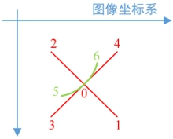

本工具用于生成平台轴标定过程中走位位置的平台轴绝对位置或相对位置，也可以生成相机轴标定过程中走位位置的相机轴绝对位置或相对位置，并决定在该位置是否拍照。在属性窗口可以设置实际项目中使用的平台类型，各个轴方向等。设置XY轴属性为“相机”，可以生成相机轴标定所需的相机轴绝对位置或相对位置。
以XYD平台类型机械手为例，机械手运动标定工具的基本原理是，机械手带着产品按照如图1所示的路径运动，相机对产品上的标记点拍照，将机械手的运动距离和相机的图像坐标代入转换关系计算，建立图像坐标系和平台坐标系间的映射关系。

图1中的位置0、1、2、3、4是平移运动，标定坐标系间的旋转和缩放关系；位置0、5、6是旋转运动，标定坐标系间的平移关系。标准标定轴位置获取工具的作用就是根据平台类型生成对应的标定运动总步数，依据当前的轴位置与输入的运动步长，同时根据输入的索引来生成特定索引对应的平台坐标。其余平台类型的标定原理与以上类似，只在运动步数与路径上有不同。
| 分类 | 参数名称 | 参数描述 |
|---|---|---|
| 属性窗口 | 平台类型 | 有XYD/XY/XD/YD/X/Y/D六种类型选项，对应实际项目中的六种平台类型。 |
| 轴正方向 | 用于根据实际项目设置X/Y/D轴方向。 | |
| 轴属性 | 用于根据实际项目设置X/Y/D轴属性，是相机轴还是平台轴。 | |
| 轴运动步长 | 用于根据实际项目设置X/Y/D轴的运动步长。 | |
| 是否绝对轴位置 | 根据实际项目来设定是否是绝对轴位置，从而判定输出的机械轴位置为绝对位置还是相对位置。 | |
| 消除反向间隙 | 决定是否消除反向间隙。 |
|
| 图像窗口 | 无 | 无 |
| 数据链 | 初始轴位置 | 设置初始轴位置，通常由与机械手平台通信获得。 |
| 索引值 | 输入步数索引，用来决定输出相应位置对应的轴位置。 |
|
| 高级界面 | 无 | 无 |
| 分类 | 参数名称 | 参数描述 |
|---|---|---|
| 监视窗口 | 轴位置 | 索引值对应的轴位置结果 |
| 交互运动步长 | 输出轴的交互运动步长 | |
| 轴方向 | 输出轴正方向 | |
| 是否拍照 | 在计算出的当前轴位置处是否拍照 | |
| 标定运动总步数 | 由输入的条件计算出的标定运动的总位置个数 | |
| 拍照位置总数 | 所有运动位置中拍照位置的个数 | |
| 平移标定拍照位置数量 | 所有运动位置中用于平移标定的拍照位置个数 | |
| 旋转标定拍照位置数量 | 所有运动位置中用于旋转标定的拍照位置个数 | |
| 执行结果 | 工具执行结果 | |
| 执行时间 | 工具执行时间 | |
| 图像窗口 | 无 | 无 |
| 数据链 | 轴位置 | 索引值对应的轴位置结果，供后序工具使用，同监视窗口参数。 |
| 交互运动步长 | 轴的交互运动步长，供后序工具使用，同监视窗口参数。 | |
| 轴方向 | 轴正方向，供后序工具使用，同监视窗口参数。 | |
| 是否拍照 | 当前轴位置处是否拍照，供后序工具使用，同监视窗口参数。 | |
| 标定运动总步数 | 标定运动的总位置个数，供后序工具使用，同监视窗口参数。 | |
| 拍照位置总数 | 所有运动位置中拍照位置的个数，供后序工具使用，同监视窗口参数。 | |
| 平移标定拍照位置数量 | 所有运动位置中用于平移标定的拍照位置个数，供后序工具使用，同监视窗口参数。 | |
| 旋转标定拍照位置数量 | 所有运动位置中用于旋转标定的拍照位置个数，供后序工具使用，同监视窗口参数。 |
索引值，表示的是第几个位置，例如XYD平台标定对应为7步标定，实际是移动9步（次），走7个位置，其中初始位置三次。走位位置从图像上看为：初始位置、右下，左上，左下、右上、初始位置、顺时针旋转、逆时针旋转、初始位置。索引值对应的就是第几步，例如索引值为2，对应的位置为左上，索引值为0对应初始位置。其中最后一次走位的初始位置不进行拍照，只是为了让平台回到初始位置。
机械手平移运动可能存在反向间隙，即运动方向改变时存在一段空白行程，电机旋转但是丝杠导轨并不运动。为了消除反向间隙，在设计运动路径时增加了起始位置。即机械手每次都从起始位置运动到各个拍照位置，但在起始位置时并不拍照，如图2所示。是否使用消除间隙的运动路径，由机械手平移运动是否存在反向间隙决定。
参见“\Samples\标准标定+基准两点对位.gvp”